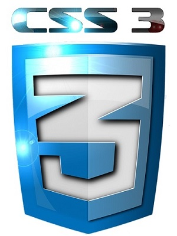
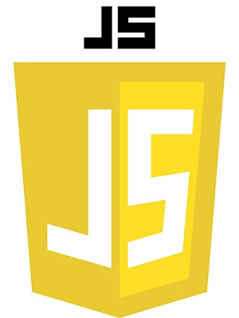
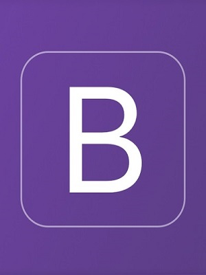
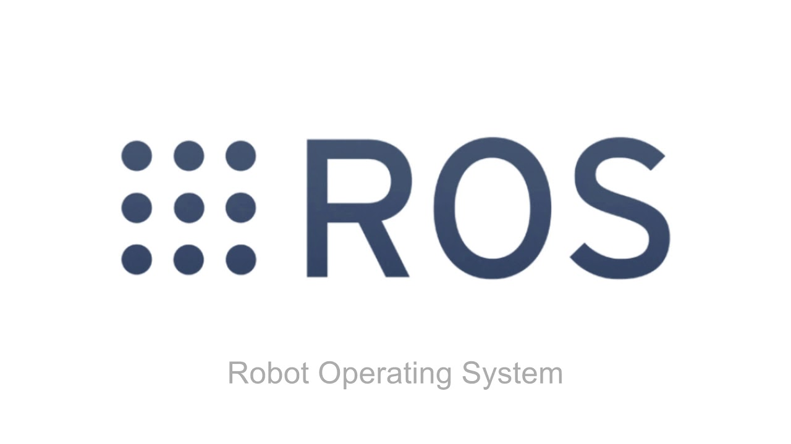
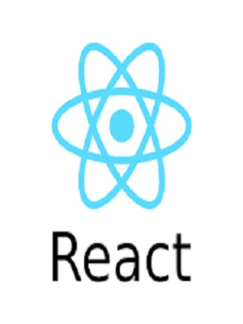
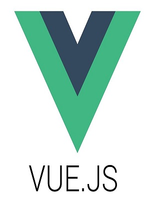
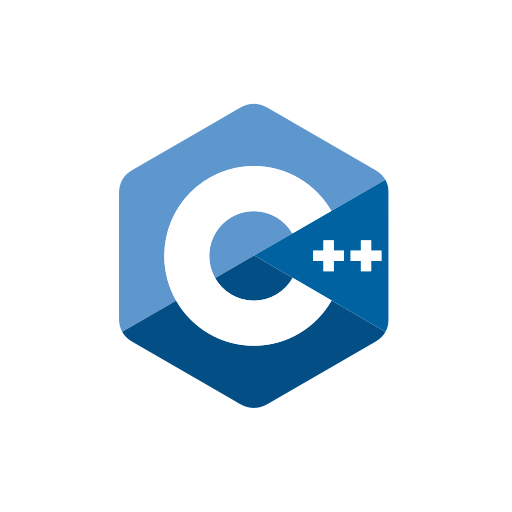

Sobre mí
$
Bienvenido.
Soy Ingeniero en Robótica y Sistemas Digitales por el Tecnológico de Monterrey, Campus Querétaro.
He concluido la totalidad de mis materias y actualmente me encuentro en proceso de obtener mi título profesional.
Mi principal interés se centra en el desarrollo de soluciones tecnológicas que integren inteligencia artificial,
aprendizaje automático, ciencia de datos, robótica y sistemas embebidos para resolver problemas reales.
Disfruto diseñar, desarrollar y experimentar con nuevas tecnologías, desde modelos de IA y visión computacional
hasta aplicaciones de automatización, análisis de datos y desarrollo de software. Siempre busco aprender nuevas
herramientas y enfrentar proyectos que representen un reto técnico.
Más sobre mí:
Tengo experiencia en Python, C++, JavaScript y MATLAB, además de conocimientos en desarrollo web,
aprendizaje automático, análisis de datos, visión computacional, procesamiento de señales,
estructuras de datos, algoritmos, electrónica, sensores, sistemas embebidos, robótica móvil
y brazos robóticos. Me apasiona seguir aprendiendo y aplicar la tecnología para crear soluciones
innovadoras con impacto en la industria y la sociedad.
Algunos proyectos realizados:
Navegación Autónoma
Tecnologías utilizadas:
ROS 2 - Python - YOLOv8
- Visión Artificial - Redes Neuronales
Linux
Navegación Autónoma
Desarrollo de un sistema de navegación autónoma implementando ROS 2 y detección de objetos mediante YOLOv8. Permite a la plataforma robótica procesar entornos dinámicos en tiempo real, evadir obstáculos mediante redes neuronales y ejecutar trayectorias óptimas bajo entornos Linux.
Ver repositorioKiosko TEC
Tecnologías utilizadas:
HTML 5 - CSS 3 - JavaScript - Python
- Análisis de señales - Linux
Kiosko TEC
Interfaz interactiva y sistema embebido diseñado para la gestión y visualización de datos en campus. Incorpora una arquitectura web robusta conectada a scripts de Python enfocados en el procesamiento y análisis de señales externas, corriendo de manera dedicada sobre sistemas Linux.
Ver repositorioPredicción de Ruta para Emergencias
Tecnologías utilizadas:
Análisis de señales - DSP - Computación paralela - IoT
Ruta de Emergencias
Algoritmo predictivo de rutas críticas para unidades de emergencia mediante IoT y procesamiento digital de señales (DSP). La arquitectura implementa computación paralela para optimizar tiempos de cómputo aritmético, procesando grandes flujos de variables viales simultáneamente.
Ver repositorio
DJI Tello
Tecnologías utilizadas:
Python - Vision Artificial - Control Lineal - Robótica Autónoma
AI Drone
Sistema de vuelo guiado para cuadricópteros basado en visión artificial y teoría de control lineal. A través de scripts de Python, el drone procesa su entorno de manera autónoma, logrando estabilidad cinemática precisa y seguimiento automático de objetivos visuales definidos.
Ver Proyecto
Navegación Autónoma por Laberintos
Tecnologías utilizadas:
Linux - Robótica - Control Lineal - Sensores
AI Drone Interface
Despliegue de una estación de control basada en web utilizando Bootstrap para la telemetría gráfica en tiempo real. La interfaz se comunica mediante sockets con el backend de Python que administra los lazos de control lineal y telemetría de video por visión artificial.
Ver Proyecto
AI Drone v3
Tecnologías utilizadas:
Python - Vision Artificial - Control Lineal - Bootstrap
AI Drone Advanced
Módulos avanzados de navegación aérea. Integra filtros digitales aplicados a las señales capturadas por las cámaras del drone, mejorando la respuesta del control lineal frente a perturbaciones ambientales de viento y pérdida de iluminación.
Ver Proyecto
AI Drone Swarm
Tecnologías utilizadas:
Python - Vision Artificial - Control Lineal - Bootstrap
Control de Enjambres
Pruebas preliminares de control simultáneo para múltiples unidades aéreas (enjambres). Centraliza el procesamiento de visión artificial en un servidor maestro que retransmite las directrices de estabilidad lineal de forma inalámbrica a cada agente de vuelo.
Ver Proyecto
AI Drone Navigation
Tecnologías utilizadas:
Python - Vision Artificial - Control Lineal - Bootstrap
Navegación en Interiores
Implementación de algoritmos de localización en espacios cerrados donde el GPS no está disponible. Utiliza técnicas de odometría visual combinadas con matrices de control lineal en Python para garantizar despegues y aterrizajes automatizados de alta precisión.
Ver Proyecto
AI Drone Navigation
Tecnologías utilizadas:
Python - Vision Artificial - Control Lineal - Bootstrap
Navegación en Interiores
Implementación de algoritmos de localización en espacios cerrados donde el GPS no está disponible. Utiliza técnicas de odometría visual combinadas con matrices de control lineal en Python para garantizar despegues y aterrizajes automatizados de alta precisión.
Ver Proyecto
AI Drone Navigation
Tecnologías utilizadas:
Python - Vision Artificial - Control Lineal - Bootstrap
Navegación en Interiores
Implementación de algoritmos de localización en espacios cerrados donde el GPS no está disponible. Utiliza técnicas de odometría visual combinadas con matrices de control lineal en Python para garantizar despegues y aterrizajes automatizados de alta precisión.
Ver ProyectoHabilidades tecnológicas
HTML 5
Sus siglas vienen del inglés 'HyperText Markup Language'. Traducido al español quiere decir 'Lenguaje de Marcado e HiperTexto'. Este lenguaje de marcado nos permite crear la estructura (o cuerpo) básica de un sitio web mediante tags (etiquetas). El número cinco (5) hace referencia a la versión en la que se encuentra actualmente. Todos los títulos, párrafos, formularios, videos, entre muchísimas cosas más, las tenemos gracias a este maravilloso lenguaje.

CSS 3
CSS es un lenguaje de estilo. Sus siglas también tienen un significado 'Cascading StyleSheet', su traducción es 'Hojas de estilo de cascada'. El número tres (3) hace referencia a la versión actual de dicho lenguaje. También nos permite darle estilos al cuerpo de nuestros sitios web. Es considerado como el maquillaje de HTML. Todo el diseño de un sitio va directamente relacionado con este lenguaje.

JavaScript
JavaScript es un lenguaje de programación que nos permite añadir, eliminar, aplicar animaciones o efectos a los componentes de nuestro sitio. Es la herramienta perfecta para realizar sitios web dinámicos y muy atractivos de la mano de CSS y HTML. Con el paso del tiempo ha evolucionado de manera exponencial y ahora mismo es absolutamente necesario conocerlo si quieres ser desarrollador web.

Bootstrap
Es una de las estructuras de trabajo más usados en el mundo. Este framework hace mucho más sencillo el diseño y posicionamiento de los elementos con CSS. Te ahorras mucho tiempo gracias a que por defecto él trae las herramientas o código interno para que tú no tengas que escribir nada más que clases específicas que tiene predefinidas. Con una de estas clases de bootstrap te podrías ahorrar cinco o más lineas de código en CSS.

ROS/ROS2
ROS (Robot Operating System) es un framework para desarrollar software de robots, proporcionando infraestructura de comunicación y herramientas en un entorno modular, principalmente en Linux. ROS 2, su evolución, mejora la interoperabilidad, el soporte en tiempo real y la seguridad, utilizando DDS para una comunicación más robusta y ofreciendo compatibilidad multiplataforma.

Linux
Sistema operativo de código abierto ampliamente utilizado en entornos de desarrollo y producción. Habilidad en Linux incluye administración de sistemas, gestión de servidores, scripting en bash, configuración de redes, manejo de permisos y usuarios, y automatización de tareas. Proficiente en la utilización de distribuciones como Ubuntu, CentOS y Debian para optimizar el rendimiento y la seguridad de sistemas informáticos.

React JS
React JS es una biblioteca Javascript de código abierto diseñada para crear interfaces de usuario con el objetivo de facilitar el desarrollo de aplicaciones en una sola página. Es mantenido por Facebook y la comunidad de software libre. En el proyecto hay más de mil desarrolladores libres. Intenta ayudar a los desarrolladores a construir aplicaciones que usan datos que cambian todo el tiempo. Su objetivo es ser sencillo, declarativo y fácil de combinar. React sólo maneja la interfaz de usuario en una aplicación; React es la Vista en un contexto en el que se use el patrón MVC (Modelo-Vista-Controlador).

Vue JS
Vue JS (comúnmente conocido como Vue) es un framework de JavaScript de código abierto para la construcción de interfaces de usuario y aplicaciones de una sola página. Fue creado por Evan You, y es mantenido por él y por el resto de los miembros activos del equipo central que provienen de diversas empresas. Vue JS cuenta con una arquitectura de adaptación gradual que se centra en la representación declarativa y la composición de componentes. La biblioteca central se centra sólo en la capa de vista.

Python
Python es un lenguaje de programación. En palabras menos técnicas, es una herramienta que facilita la creación y manejo de programas y aplicaciones sin necesidad de tener profundos conocimientos de programación. Cualquier persona puede usar o modificar el software de Python, además puede hacerlo de forma gratuita. Es muy popular en diversas áreas como desarrollo web, análisis de datos, inteligencia artificial y más.

C++
C++ es un lenguaje de programación. En palabras menos técnicas, es una herramienta que permite crear programas y aplicaciones complejas, especialmente cuando se requiere un alto rendimiento. Aunque tener conocimientos de programación es útil, cualquiera puede aprender y usar C++. Es un lenguaje muy utilizado en el desarrollo de software de sistemas, juegos, aplicaciones de escritorio, y en dispositivos embebidos. C++ es conocido por su eficiencia y control sobre los recursos del hardware, y ha sido una piedra angular en la industria del software durante décadas.

Git
Sistema de control de versiones distribuido para gestionar proyectos de software. Habilidad en Git incluye creación y gestión de repositorios, ramas y fusiones, resolución de conflictos, y colaboración en equipo mediante plataformas como GitHub y GitLab. Proficiente en el uso de comandos de Git para seguimiento de versiones y flujos de trabajo eficientes.

MatLab
Entorno de programación y cálculo numérico utilizado para análisis de datos, desarrollo de algoritmos y visualización. Habilidad en MATLAB incluye escritura de scripts y funciones, manipulación de matrices y datos, creación de gráficos y visualizaciones, y desarrollo de modelos matemáticos y simulaciones. Proficiente en el uso de herramientas y toolboxes de MATLAB para aplicaciones en ingeniería, ciencia y economía.
{kind=link}
{kind=link}
{kind=link}
{kind=link}
{kind=link}